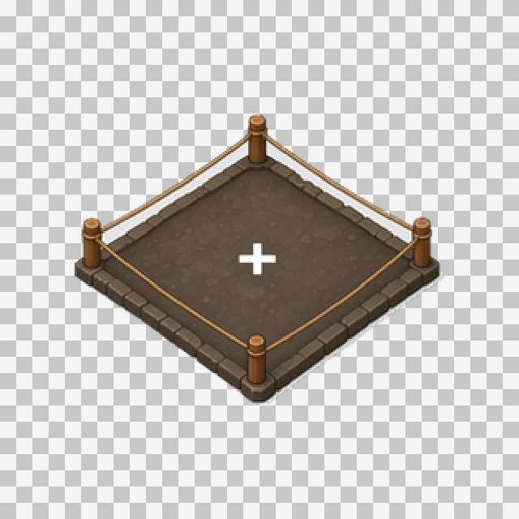
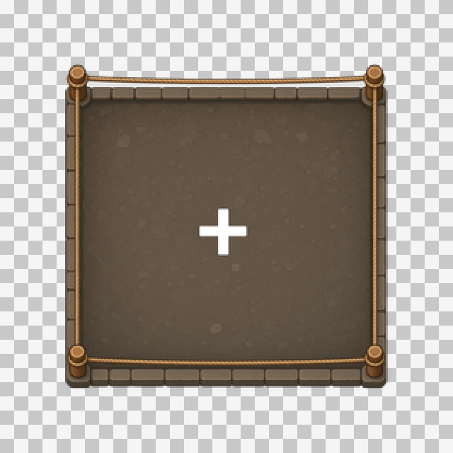
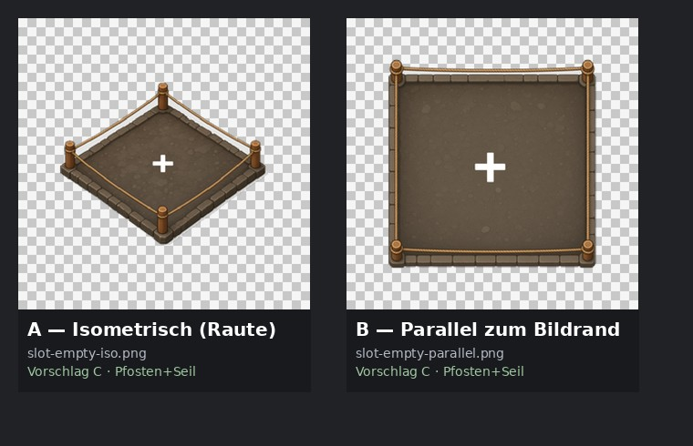

Orientierung A
Isometrisch (Raute)
slot-empty-iso.png — gleiche Blickrichtung wie die Stände.

Design: Pfosten + Seil. A = isometrische Raute · B = Kanten parallel zum Bildrand. zurück zu den 3 Design-Vorschlägen
slot-empty-iso.png — gleiche Blickrichtung wie die Stände.

slot-empty-parallel.png — Kanten horizontal/vertikal, oft sauberer im UI-Raster.

